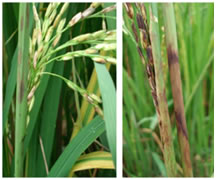
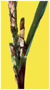
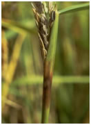

RICE :: FUNGAL DISEASES :: SHEATH ROT
Sheath rot - Sarocladium oryzae (Syn: Acrocylindrium oryzae)
Symptoms
Initial symptoms are noticed only on the upper most leaf sheath enclosing young panicles. The flag leaf sheath show oblong or irregular greyish brown spots. They enlarge and develop grey centre and brown margins covering major portions of the leaf sheath.
The young panicles remain within the sheath or emerge partially. The panicles rot and abundant whitish powdery fungal growth is seen inside the leaf sheath.
{kind=link}
|  |  |  |
Symptoms |
||
Pathogen
The fungus produces whitish, sparsely branched, septate mycelium. Conidia are hyaline, smooth, single celled and cylindrical in shape.
Favourable Conditions
- Closer planting
- High doses of nitrogen
- High humidity and temperature around 25-30˚C
- Injuries made by leaf folder, brown plant hopper and mites increase infection
Disease Cycle
The disease spreads mainly through air-borne conidia and also seed-borne. Primary source of inoculum is by means of infected plant debris. Secondary spread is by means of air borne conidia produced on the leaf sheath.
Management
- Spray Carbendazim 500g or Edifenphos 1L or Mancozeb 2 kg/ha at boot leaf stage and 15 days later.
- Soil application of gypsum (500 kg/ha) in two splits.
- Application of Neem Seed Kernal Extract (NSKE) 5% or neem oil 3 % or Ipomoea or Prosopis leaf powder extract 25 Kg/ha. First spray at boot leaf stage and second 15 days later.